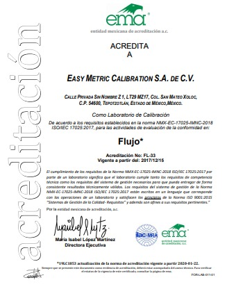
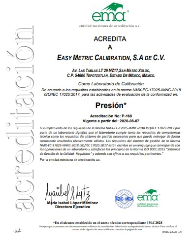
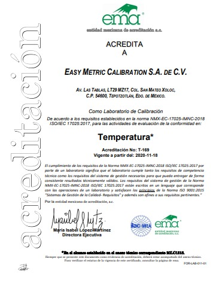

Competencia técnica
El servicio se ejecuta con personal, métodos, equipos y controles definidos para el alcance aplicable.
Conoce el respaldo de nuestros servicios de calibración y consulta documentos disponibles para clientes, ingeniería, calidad y compras.
ISO/IEC 17025 es la referencia internacional para laboratorios de ensayo y calibración. La acreditación evalúa la competencia del laboratorio dentro de un alcance definido; por eso cada servicio debe revisarse contra el alcance vigente.
El servicio se ejecuta con personal, métodos, equipos y controles definidos para el alcance aplicable.
La cadena metrológica permite relacionar los resultados con referencias reconocidas y documentadas.
El certificado facilita interpretar el resultado, la incertidumbre declarada y la condición del instrumento.
La documentación contribuye al control de equipos, historial metrológico y evidencia dentro del sistema de calidad.

La configuración del servicio se define conforme al instrumento, fluido, rango y alcance vigente.
Ver documento →
Manómetros, transmisores e instrumentos dentro del alcance aplicable.
Ver documento →
RTD, termopares, termistores y otros instrumentos según alcance aplicable.
Ver documento →Consulta documentos corporativos, acreditaciones y materiales técnicos disponibles para clientes, ingeniería, calidad y compras.
Consulta las vistas disponibles de flujo, presión y temperatura, además de la documentación técnica disponible.
La trazabilidad ayuda a que el resultado de una calibración pueda relacionarse con referencias metrológicas mediante una cadena documentada de calibraciones. Para cada servicio se confirma el patrón, método y alcance aplicable.
Comparte la magnitud, equipo y requisito de auditoría para revisar la documentación aplicable.